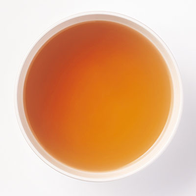
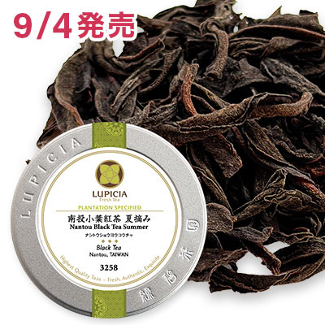

LUPICIA 3258 · g13253258
난터우 소엽홍차 여름따기
南投小葉紅茶 夏摘み
ナントウショウヨウコウチャ
수량한정밀크티 추천아이스티 추천


ミルクティーやアイスティーも楽しめる多彩な魅力
心地よい果実味と軽快な味わい。渋みが少なく爽やかな余韻が印象的な、個性あふれる夏摘み台湾紅茶。
【お茶の説明】
凍頂烏龍茶で有名な名産地、南投県鹿谷郷で作られた、香り高く爽やかな飲み口の台湾紅茶です。
渋みが少なく、熟れた果実を思わせるまろやかな甘みが魅力の、洗練されたすっきりとした風味が特徴です。濃厚なコクやボディを持つ大葉種に比べると、風味はすっきりとしていますが、繊細ながら凝縮された風味でミルクティーやアイスティーも楽しめる多彩な魅力があります。ミルクを入れると、茶葉本来の甘みとミルクのまろやかさが引き立ち、やさしく上品な味わいのミルクティーをお楽しみいただけます。
【産地情報】
南投県鹿谷郷は、世界的に有名な台湾烏龍茶「凍頂烏龍茶」の発祥の地として広く知られています。
この地域で生産される主なお茶は烏龍茶ですが、一部の農家では優れた製茶技術を活かし、烏龍茶用の茶樹を完全発酵させて作る紅茶の生産も行われています。
一年を通して霧深い山々、肥沃な土壌、そして朝晩の寒暖差が大きい気候条件などが、高品質な茶葉の生育に最高の環境をもたらしています。
- 상품번호
- 3258
- 상품 형태
- 30g 캔입
- 가격
- 1,930円
- 판매 안내
- ※수량・기간한정
※상미기한：제조일로부터2년 - 원재료
- 紅茶※商品の改定などにより、商品パッケージの記載内容が上記内容と一部異なる場合がございます。
- 원산지
- 台湾・南投県※商品の改定などにより、商品パッケージの記載内容が上記内容と一部異なる場合がございます。
- 찻잎
- 2.5-3g
- 물
- 熱湯
- 우림 시간
- 2.5-3分
- 우림 횟수
- 1-2回
다른 포장
보관된 상품 정보 갱신일: 2026-10-04